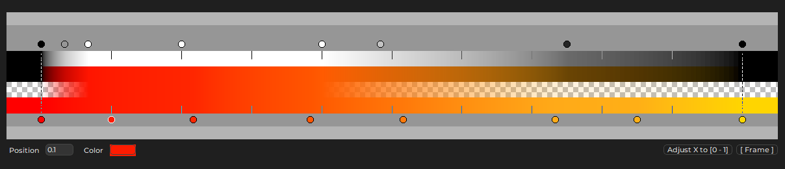

Color Gradients
Color gradients are used to color things using a 1D lookup. They are typically set up once and shared across many assets, such as particle effects. Modifying a color gradient will affect all resources that use the gradient. Therefore it is advisable to create common gradients early during development.
The color gradient can be sampled along the X-axis. This is frequently used to sample a color over time, but other parameters may be used for the lookup as well. If a gradient is supposed to be used in a looping fashion, the first and last color have to be set up to match.
Gradient Editor
The image below shows a color gradient and its editing controls:

The gradient is displayed in four different ways:
- The first row shows a black and white representation of the alpha channel.
- The second row shows the color values of the gradient multiplied with the alpha channel, to give an impression how the alpha channel may affect the color perception, when used for transparency.
- The third row uses the alpha channel to fade between the color values and the background checker pattern, to visualize the effect of the alpha channel in a different way.
- The fourth row only shows the color channel.
Not all gradients use the alpha channel. For those, the first row will be entirely white and the second to fourth row will all appear identical.
Editing Keyframes
Above the alpha channel and below the color channel you will notice greyscale and colored circles. These are keyframes that define the value at that specific position. All values in between are interpolated. You can grab a keyframe and move it left or right. Double clicking a color keyframe will open a color picker to change its value.
When you select a keyframe, its exact position and value can also be changed with the UI elements at the bottom.
To create a keyframe double click either the color channel bar or the alpha channel bar (where the respective keyframes are shown as circles). A newly inserted keyframe always gets the interpolated value at that position.
To delete a keyframe just select it and press the Del key.
View
You can scroll left and right using right click and drag. You can zoom in and out using the mouse wheel.
The [ Frame ] button will zoom and scroll the view such that all keyframes are framed.
Gradient Range
Each keyframe has a position along the X axis. Most code that looks up a gradient doesn't actually care about the exact positions. Instead the gradient is looked up in a normalized way, meaning the leftmost keyframe is mapped to position 0 and the rightmost keyframe is mapped to position 1. For instance, particle effects do all of their lookups this way. However, it is good practice to author the gradients already within this range, unless you have a use case where you indeed want keyframes outside the [0; 1] range.
To make this easier, you can use the Adjust X to [0 - 1] button. This will automatically map all existing keyframes to this range for you.
The dotted lines indicate which keyframe is the leftmost and which is the rightmost.